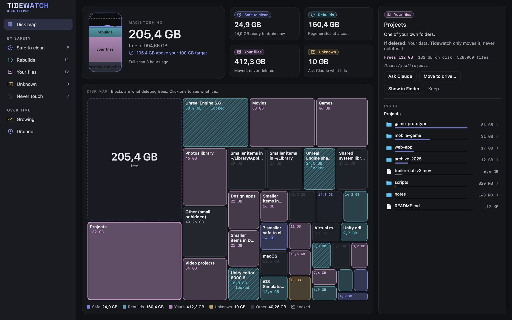
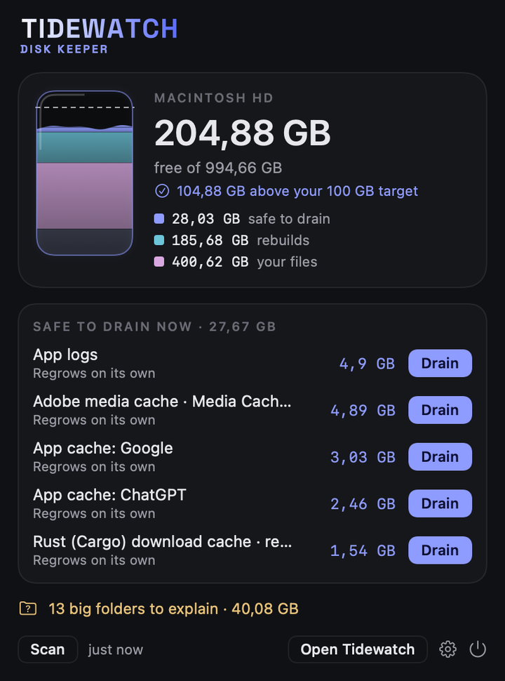

Watch the tide on your disk.
A calm menu-bar keeper for your Mac: it explains every big folder in plain words and frees space without touching your own files.
In action
Real screens from the app as it is today.


The disk map shows demo folders; the menu shows a real Mac.
What it does
Free space at a glance, and a quiet warning before it runs low.
Every big folder explained: what it is, which app made it, what deleting does, whether it comes back.
APFS clones counted properly, so the number is what deleting actually frees.
Caches that regrow on their own, cleaned in one click. Your own files are never deleted.
Projects you haven't touched in weeks move to another drive, every file checked.
Nothing an open app or an active project needs can be cleaned.
A heads-up when something starts growing fast, long before the disk is full.
Real folders as blocks. Click one to see inside and go deeper.
Free
Tidewatch is free. Ask Claude, for folders it doesn't recognise, is optional: it uses your own Anthropic key and sends only folder names and sizes, never file contents.
Get Tidewatch for Mac
It needs
- macOS 14 Sonoma or later
- Apple Silicon or Intel
- About 5 MB
On first launch it asks for
- Full Disk Access optional, to measure everything. It reads sizes only, never your files.
- Notifications optional, for low-space and fast-growth alerts.
Everything runs on your Mac. Signed and notarized by Apple.
Where it stands
Free. Signed and notarized by Apple. New app icon.
Apple Silicon and Intel. Coming to Windows.